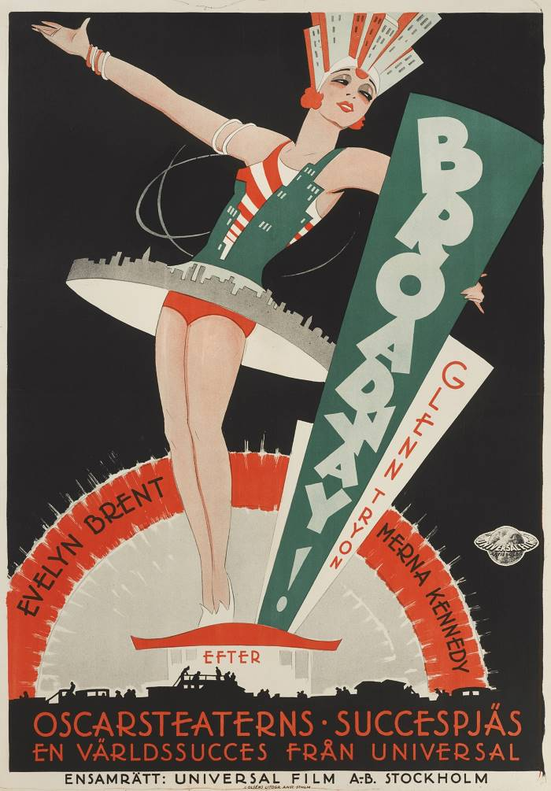

ARTWORK


 - Eric Rohman")


 - Eric Rohman")


"Each period of a civilisation creates an art that is specific in it and which we will never see reborn. To try and revive the principles of art of past centuries can lead only to the production of stillborn works."
Wassily Kandinsky